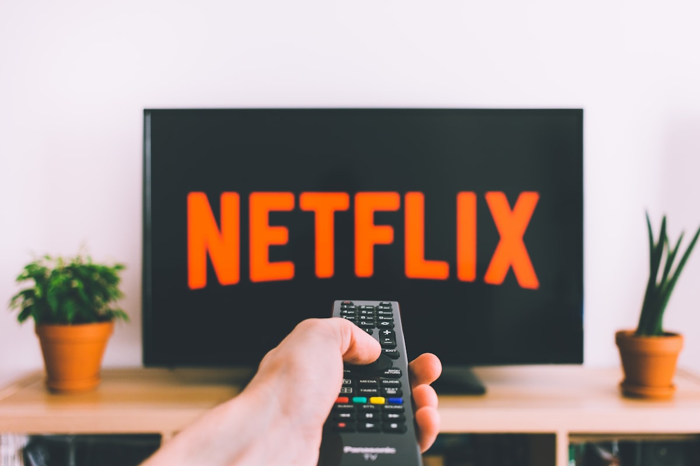

India has always been a market that defies conventional wisdom. While the West debates subscription fatigue, Indian consumers are embracing a different model entirely: Free Ad-Supported Streaming TV (FAST). And the numbers suggest this could be the biggest opportunity in Indian entertainment since the smartphone revolution.
Understanding FAST
FAST channels are exactly what they sound like: free streaming TV channels supported by advertising. Think of them as the streaming equivalent of traditional broadcast TV - lean back, watch scheduled programming, accept some ads in exchange for zero subscription fees.
In the US, FAST viewing time reached 1.8 billion hours in August 2025, up 43% year-over-year. But India presents an even more compelling case for FAST adoption.

Why India is Perfect for FAST
1. The Free Content DNA
Indian consumers have always gravitated toward free or low-cost entertainment options. From free-to-air television to ad-supported YouTube, the willingness to accept ads in exchange for free content is culturally embedded. FAST isn't a compromise for Indian audiences - it's a familiar value proposition.
2. CTV Explosion
The CTV market in India has experienced explosive growth. Projections indicate that CTV households could reach 60 million or higher by end of 2025, surpassing earlier estimates of 40 million. This represents a 4x increase from 2020 levels.
Smart TV shipments continue to accelerate, pushing more viewers to watch streaming on larger screens rather than phones. This shift from mobile-first to big-screen viewing creates the perfect environment for FAST channels.
3. Regional Content Hunger
India's regional content demand is a natural fit for FAST channelization. The increasing demand for regional and localized programming highlights a shift toward narratives that resonate with various cultural identities.
Unlike subscription services that struggle to justify the economics of niche regional content, FAST channels can serve smaller audiences profitably through targeted advertising.
4. Internet Economics
High mobile penetration and low-cost data plans are driving streaming adoption across India. The economics that make Netflix challenging for mass adoption make FAST channels accessible to everyone with an internet connection.
The Current Landscape
Several players are already building significant FAST presence in India:
Samsung TV Plus: Samsung Electronics India offers over 100 channels on its FAST service, including Zee News, Zee Business, ABP News, and Times Now Navbharat. Available to all Samsung Smart TV users for free.
MX Player: One of the pioneers in India's ad-supported streaming space, MX Player has built a massive user base on free content.
Swift TV: Designed specifically for Indian viewers, Swift TV is reshaping what FAST looks like in the market with deep regional focus - offering channels in multiple Indian languages and content that feels local and familiar.
Market Projections
The numbers tell a compelling story:
- User penetration in India will be 9.8% in 2025, anticipated to increase to 10.2% by 2030
- The India Smart TV and OTT market is estimated at $22.39 billion in 2025
- Market growth rate of 18.2% CAGR through 2030
- Untapped rural markets present expansion opportunities with increasing internet penetration
Challenges to Navigate
The opportunity is massive, but challenges exist:
Monetization Gaps: Lower CPMs and ad spend in Asian markets compared to the US make scaling revenue challenging. Advertisers are still learning to value FAST inventory appropriately.
Measurement Immaturity: Standards for viewability and attribution for CTV and FAST are still maturing in India. Advertisers need confidence in measurement before significantly increasing spend.
Piracy: Piracy poses risks to monetization. When free legitimate options exist alongside pirated content, the value proposition of FAST becomes clearer - but the transition takes time.
Infrastructure Fragmentation: Varying levels of digital infrastructure and internet quality across India create uneven viewing experiences.

The Opportunity for Smart TV Makers
For companies building smart TVs in India, FAST represents a strategic opportunity. At Lumio, we see FAST as a key differentiator for our smart TV lineup:
- Differentiation: Pre-installed FAST channels can be a compelling feature that sets one TV apart from another.
- Revenue Share: TV makers can participate in ad revenue from FAST channels, creating recurring revenue streams beyond hardware sales.
- User Engagement: Free content keeps users on the platform, increasing overall TV usage and satisfaction.
- Data Insights: FAST viewing generates valuable data about content preferences that can inform product development.
What's Next
Looking ahead, several trends will shape FAST in India:
Original FAST Content: As the market matures, we'll see content created specifically for FAST distribution - shorter formats, lower production costs, higher volume.
Vernacular Expansion: The real growth will come from regional language FAST channels serving audiences underserved by mainstream OTT platforms.
Interactive Features: FAST channels will increasingly incorporate interactive elements - voting, shopping, second-screen experiences - enabled by smart TV capabilities.
Advertiser Education: As measurement improves and success stories emerge, advertiser spend on FAST will accelerate.
"FAST isn't competing with Netflix or Amazon Prime. It's competing with traditional broadcast TV - and offering a better experience with more choice and flexibility. That's why it will win."
The Bottom Line
India's entertainment future isn't subscription-first - it's free-first with premium subscription options for those who want them. FAST channels represent the natural evolution of how most Indians will consume TV content.
For those of us building in this space, the question isn't whether FAST will succeed in India - it's how quickly we can build the infrastructure, content, and advertising ecosystem to capture this $12 billion opportunity.
The viewers are ready. The screens are in homes. The only question is who will move fast enough to own FAST in India.
Want to discuss FAST channels and CTV in India? Connect with me on LinkedIn or X/Twitter.
Image Credits
All images used in this article are sourced from Unsplash under the Unsplash License.